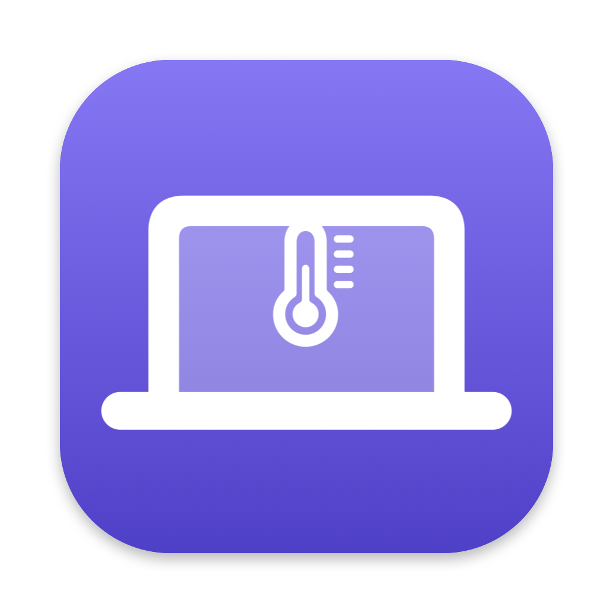
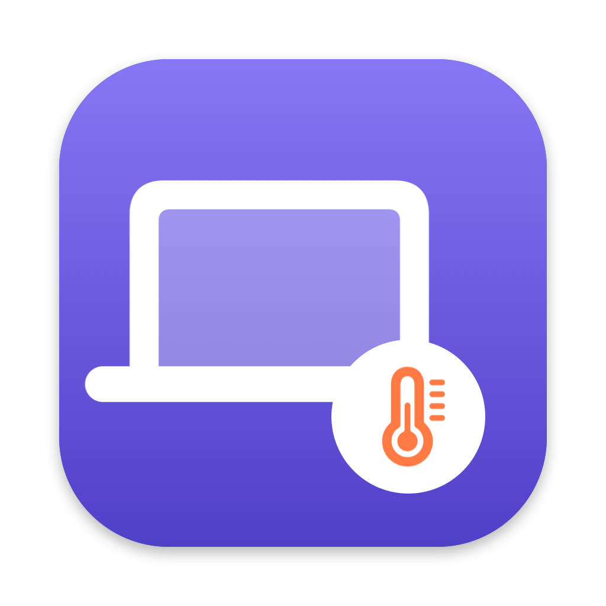
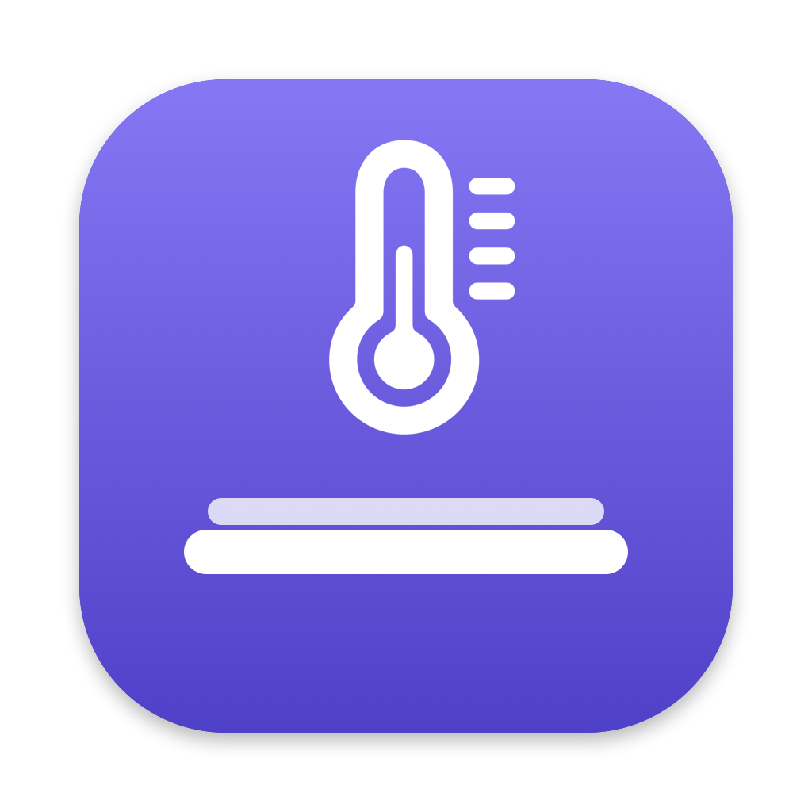

웹사이트와 같은 보라색 바탕. 작은 크기(64·32 px)에서도 알아볼 수 있는지 함께 봅니다.

A. 화면 안 온도계
랩탑 화면에 온도계를 넣음

B. 랩탑 + 온도 배지
오른쪽 아래 주황 온도계 배지

C. 덮은 랩탑 위 온도계
뚜껑 닫힌 옆모습 + 온도계
2. 메뉴 — Astryx 규칙 적용
구분선 대신 간격으로 묶음(묶음 안 8 · 묶음 사이 16) · 컨트롤 높이 28/32 통일 · 모서리는 역할별(카드 12, 컨트롤 10, 항목 6) · 색은 의미로만(보라=켜짐, 주황=경고, 빨강=기준 초과). 세 상태 모두 높이가 같습니다(경고 중에는 끄는 시점 자리에 같은 높이로 경고가 들어감).
☾ᶻᶻ목 15:20
닫아도 깨어있기
꺼짐
끄는 시점
무제한시간 뒤시각에
끌 때까지 계속 깨어 있습니다.
CPU58°C
배터리31°C
기준 85°C · 배터리 45°C배터리 97%
잠든 뒤 다시 켜기예약 ▾
화면만 끄기
디버그…
설정…⌘,
종료⌘Q
꺼짐
☀︎목 15:20
닫아도 깨어있기
켜짐 · 1시간 12분 남음 · 16:32에 꺼짐
끄는 시점
무제한시간 뒤시각에
1시간30분
30분1시간2시간4시간8시간
CPU71°C
배터리34°C
기준 85°C · 배터리 45°C충전기 연결 · 82%
잠든 뒤 다시 켜기예약 ▾
화면만 끄기
디버그…
설정…⌘,
종료⌘Q
켜짐 · 1시간 30분 뒤
🌡︎목 15:20
닫아도 깨어있기
켜짐 · 끄는 시간 없음
⚠︎ CPU 과열 · 48초 뒤 해제
swift-frontendCPU 312%
nodeCPU 140%
WindowServerCPU 22%
CPU88°C
배터리39°C
기준 85°C · 배터리 45°C충전기 연결 · 90%
잠든 뒤 다시 켜기예약 ▾
화면만 끄기
디버그…
설정…⌘,
종료⌘Q
과열 경고 (끄는 시점 영역 대신 경고 배너)
3. 설정 창 — 보호 탭
맨 위 탭 막대 · 묶음마다 흰 카드(모서리 12) · 줄 높이 44 · 왼쪽 설명, 오른쪽 컨트롤.
⚙︎ 일반🌡︎ 보호⌨︎ 외부 제어ⓘ 정보
과열
CPU 기준넘으면 경고, 오래 넘으면 깨어있기를 끕니다
85°C
배터리 기준
45°C
지속 시간60초 넘으면 경고, 120초면 해제
60초
전원
충전기가 빠지면 끄기
배터리 하한
20%
과열 뒤 다시 켜기
식으면 맥을 깨워 다시 켜기두 온도가 기준보다 10°C 낮을 때, 최대 3번
확인까지 기다릴 시간
30분
4. 웹사이트 ondo 페이지 — 첫 화면과 보호 동작 그림
토리랩스 사이트의 색·글꼴은 그대로 두고, 첫 화면 그림을 새 메뉴로 바꾸고, 다른 앱과의 차이(과열 보호)를 그래프로 보여 줍니다. 설치는 Homebrew 한 줄을 함께 보입니다.